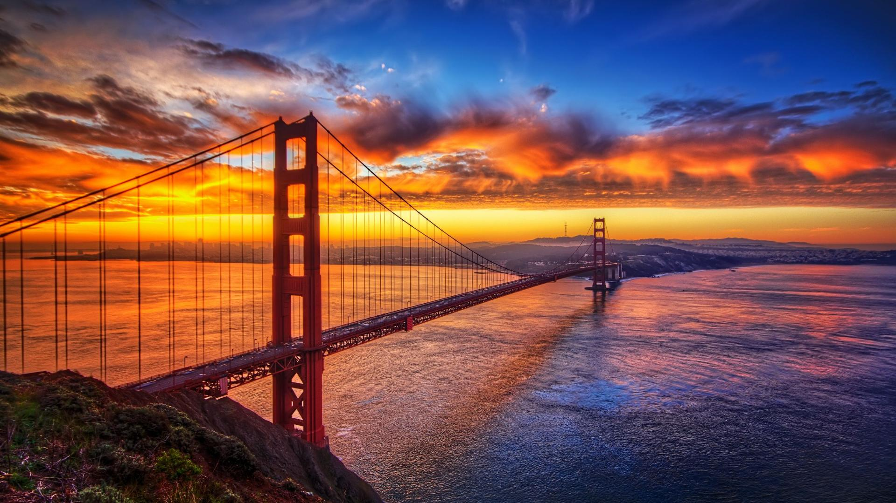

Golden Gate Bridge

The Golden Gate Bridge is a suspension bridge spanning the Golden Gate strait, the mile-wide,
three-mile-long channel between San Francisco Bay and the Pacific Ocean. The structure links the U.S.
city of San Francisco, on the northern tip of the San Francisco Peninsula, to Marin County, bridging both U.S.
Route 101 and California State Route 1 across the strait. The bridge is one of the most internationally
recognized symbols of San Francisco, California, and the United States. Hopefully you'll hit it on a
clear day so you can see it in all its glory, but even shrouded in fog it's a magical sight. To get a
real sense of its beauty or scale, walk or bike its 1.7-mile span.
Monterey Bay Aquarium
The Monterey Bay Aquarium is a public aquarium located in Monterey, California, United States.
The aquarium was founded in 1984 and is located on the site of a former sardine cannery on Cannery Row.
It has an annual attendance of more than two million visitors. It holds thousands of plants and animals,
representing more than 600 species on display. The aquarium benefits from a high circulation of fresh ocean
water which is obtained through pipes which pump it in continuously from Monterey Bay.
It opened a penguin exhibit, Jellyfish Special Exhibit, Tentacles Special Exhibit
Bixby Creek Bridge
Bixby Creek Bridge, also known as Bixby Bridge, is a reinforced concrete open-spandrel arch bridge in Big Sur, California.
The bridge is located 120 miles (190 km) south of San Francisco and 13 miles (21 km) south of Carmel in Monterey County
along State Route 1.
The bridge is “one of the most photographed features on the West Coast” due to its pleasing aesthetic design
and because of its location along the scenic Central Coast of California, and has frequently been used in
automobile commercials. The bridge has become a regional landmark and was used in the opening sequences of
the television series Then Came Bronson, the films Play Misty for Me and The Sandpiper.
Castello di Amorosa

Castello di Amorosa is a castle and a winery located near Calistoga, California. First opening its doors
to the public in April 2007, the castle is the pet project of 4th generation vintner, Dario Sattui,
who also owns and operates the V. Sattui Winery named after his great-grandfather who originally
established a winery in San Francisco in 1885 after emigrating from Italy to California